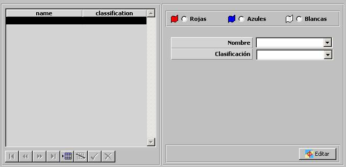

Planes PIM

Mediante esta tabla se especifican todos los Planes PIM incluidos en el Ejercicio, clasificados por bando. Podrán ser seleccionados como datos iniciales de la unidad (ver apartado Preparación de Ejercicios - Unidades), en cuyo caso a la hora indicada se creará la unidad y comenzará a ejecutarlo automáticamente, o bien, durante la ejecución del ejercicio, las unidades de superficie, submarinas y aéreas podrán seleccionar para su ejecución automática uno de los Planes PIM de su bando.
Durante la ejecución del Ejercicio, a cada unidad se le presenta en la Pantalla Táctica los Planes PIM correspondientes a su bando.
Los Planes PIM se especifican gráficamente:
Editar: Mediante este botón se abre la ventana de Preparación de Escenarios, sobre la que se mostrará una Herramienta de Dibujo con la que se podrá especificar gráficamente el Plan PIM, incluyendo los siguientes parámetros por tramo:
Parámetros por tramo del Plan PIM:
Velocidad:
Altura / Profundidad:
Ver la descripción de esta herramienta en el apartado Preparación de Escenario.